Private App Management
The following sections explain how to create and steer Private Apps.
Specify a Private App for the Publisher to steer. A message appears on the Private Apps App Definition page when you're approaching the maximum limit. You can contact Support to increase the limit.
Go to Settings > Security Cloud Platform > App Definition and click Private Apps.

Click New Private App.
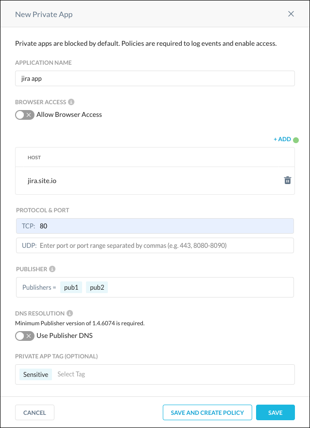 Enter a meaningful app name in the Application Name field (like
jira).Enter the Host domain in the Host field (like
jira.site.io). The Host field supports the following syntax: Host (jira.site.io). Up to 32 hosts can be added.Important
Using a hostname is recommended. If an app needs to be accessible by hostname and IP address, enter each separately by clicking Add.
When using an IP address for a host domain, ensure the IP address differs from all IP addresses used for Publishers. Other IP factors include:
Don't use wildcards, like
*.com, and*.local, one level below the top-level domain. You can use wildcards two levels down, like*.test.xyz, for the purpose of private app discovery.Don’t use 0/0.
Don’t use any CIDR less than /8. For example, if
x.x.x.x/yis a configured CIDR, thenyshould be greater than or equal to 8. (eg 10/8 is allowed, 1/7 is not allowed).Don’t use TLD.
Don’t use ipv6 equivalents of 0/0:
“::”
“0:0:0:0:0:0:0:0”
“::0”
Enter the app TCP or UDP port, port range, or ports and port ranges. For example:
Enter a specific port:
80Enter a specific port range:
1024-2048Enter ports and port range(s):
22,80,443,1024-2048
Click in the Publisher text field and select one or more Publishers from the dropdown list.
Tip
For high-availability, add multiple publishers for each private app. Up to 16 Publishers can be used per app.
To have the Netskope Client send DNS requests for the specified hosts to the configured Publishers, enable the Use Publisher DNS toggle.
Click Save.
Connecting the private app to the publisher may take several minutes. Make sure that you see the green icon  for this private app before proceeding. If the badge is red, use the Troubleshooter feature or check your firewall rules before proceeding.
for this private app before proceeding. If the badge is red, use the Troubleshooter feature or check your firewall rules before proceeding.
Note
When a user has access to a private app on different tenants using Netskope-encoded private app URLs from the same browser, then after accessing the private app on one tenant, a user will need to clear the cookies from the browser before being able to access the private app on a different tenant.
Troubleshoot a Private App
To troubleshoot a private app:
Click Troubleshoot on the Private Apps page.

Select an option for these settings:
Private App: Select an app from the dropdown list.
User and Device: Search for and select a user and device, or select one or more from the list.

Click Troubleshoot. If the configuration is not correct, the troubleshooter will show what is not configured properly.

When the configuration is correct, the Troubleshooter will show all is working.
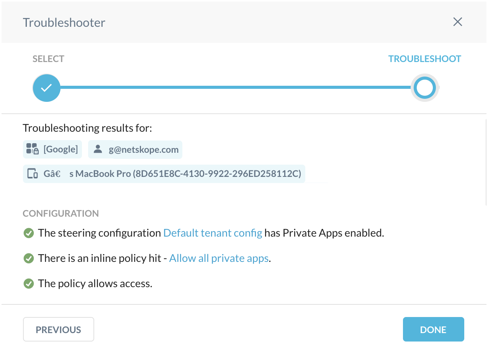
For more information about troubleshooting, refer to the Private Access Troubleshooting .
Browser Access is an additional method through which users can access enterprise internal web applications over HTTP/HTTPS. Users can also access non HTTP/HTTPS internal applications using the Netskope Client.
Prerequisites
You must have an active Identity Provider (IdP) account and have privileges to modify settings in your IdP account that will direct traffic to Netskope.
Browser Access requires that the hostname in the originating HTTP request matches the hostname expected by the Application server. Browser Access only supports HTTP/1.1, HTTP/2, and TLS 1.2. TLS 1.3 and HTTP/3 are not supported.
Workflow
Create a SAML Reverse Proxy account in the Netskope UI, and then update your IdP account with the Netskope ACS URL and Audience URL.
Create a Real-time Protection policy to grant users browser access to Private Apps.
Create a SAML Account for Browser Access
You will need your IdP SSO URL and certificate to complete these steps.
Log in to the Netskope UI.
Go to Settings > Security Cloud Platform and click SAML (under Reverse Proxy).
Click Add Account.

In the New Account window, enter a name for the account.

Select Private Apps from the Application dropdown list.
Select and enter these parameters:
IdP SSO URL: Enter your IdP SSO URL.
IdP Certificate: Enter your IdP certificate.
Click Save and View Netskope Settings to see the URLs for this account. Copy the Browser Access ACS URL and Audience URL to use in your IdP account. Update your IdP account with these URLs before proceeding.

Enable Browser Access for a Private App
These instructions are for new and existing Private Apps.
Go to Settings > Security Cloud Platform > App Definition and click Private Apps.
Click New Private App to create a new private app, or select an existing app (and jump to step 4).

Enter a meaningful app name in the Application Name field.
Enable Allow Browser Access.
Enter the Host domain in the Host field (like
jira.site.io). The Host field supports the following syntax: Host (jira.site.io). Up to 32 hosts can be added. Browser Access does not support wildcards in host names. Next add a TCP port number.After adding the hostname and port, the Public Host URL is displayed. This is the URL by which properly authenticated users can access the private app. You can copy the public host name by clicking the copy icon
 .
.Select HTTP or HTTPS. For HTTPS, the private app must either use a certificate that is signed by a trusted certificate authority, or you must select the Trusted self-signed certificate option.
A Private App can be accessed via a browser in two ways:
Using the generated hostname from the Public Host field.
Creating a custom hostname and uploading a certificate and key pair for the private host. Click the Custom Hostname toggle, and then click Upload the Certificate to open a page to enter your certificate and key.
Note
You can use the public host name for your custom host name in your DNS system. Create a DNS record, select the CNAME type, and then add your public host name. You will need to upload the certificate and key for the custom host name. Click the Custom Hostname toggle, and then click Upload the Certificate to open a page to enter your certificate and key.
Click in the Publisher text field and select one or more Publishers from the dropdown list.
Tip
For high-availability, add multiple publishers for each private app. Up to 16 Publishers can be used per app.
Click Save.
Connecting the private app to the publisher may take several minutes. Make sure that you see the green icon for this private app before proceeding. If the badge is red, use the Troubleshooter feature or check your firewall rules before proceeding.
Note
When a user has access to a private app on different tenants using Netskope-encoded private app URLs from the same browser, then after accessing the private app on one tenant, a user will need to clear the cookies from the browser before being able to access the private app on a different tenant.
Create a Real-time Protection Policy for Browser Access to Private Apps
You need to create a Real-time Protection policy in order to allow Browser Access to Private Apps.
Go to Policies > Real-time Protection.
Click New policy and select Private App Access.
For Source, select the Users, OU, or Groups for which you want to grant access to the private app(s).
For Access Method, select Browser Access. At least one Access Method must be defined, either Browser Access or Client.
If Browser Access is used, Client users will not be able to access Browser Access Private Apps. If Client is used, Client users and Browser Access users will have access to Private Apps.
If Access Method is not showing, click Add Criteria to search for and select Access Method, and then select Browser Access.
For Destination, leave Private App and select your private app from the dropdown list.
For Action, select Allow to grant access. To deny access, select Block, select a policy notification template from the dropdown list, or create one.
Give the policy a name (like
Browser Access for JIRA), and then click Email Notification to choose the notification template for the policy. When finished, click Save.
Click Apply Changes.
Clear Browser Access
Browser Access provides the ability to terminate a user's active session. Go to Skope IT > Users, click the menu icon  for a user, and then click Clear Private App Auth to clear the user's browser access authentication information. As a result, the user will need to re-authenticate to access the private app.
for a user, and then click Clear Private App Auth to clear the user's browser access authentication information. As a result, the user will need to re-authenticate to access the private app.
Configure Google Workspace as the IdP for Browser Access Authentication
This document explains how to configure Google Workspace as your IdP to work with Browser Access to perform authentication in a browser.
To complete this procedure you need:
A basic understanding of SAML, like knowing the relation between the service provider (SP) and the identity provider (IdP).
A Google Workspace account. If you don't have one, use these instructions
 to create one.
to create one.A Private App configured for Browser Access.
For more information about creating a SAML application in Google, go here.
Get your Google Workspace SSO information
Configure Google Workspace with a customized SAML application
First configure Google Workspace with a customized SAML application, finally end with the connecting of private app in the Clientless way.
Get your Google Workspace SSO Information
Log in to Google Workspace
and go to the Security Settings SSO page. Copy the SSO URL and Certificate.
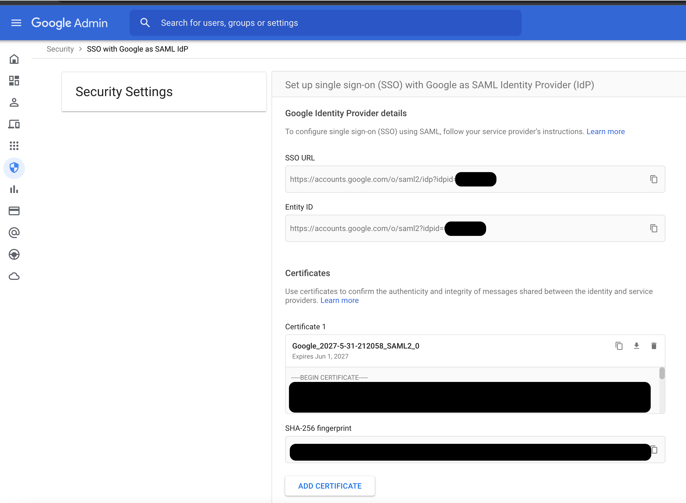
Create a Netskope SAML Reverse Proxy Account
In the Netskope UI, go to Settings > Security Cloud Platform > Reverse Proxy > SAML and click Add Account.
Enter a name and select Private Apps from the Application dropdown list.
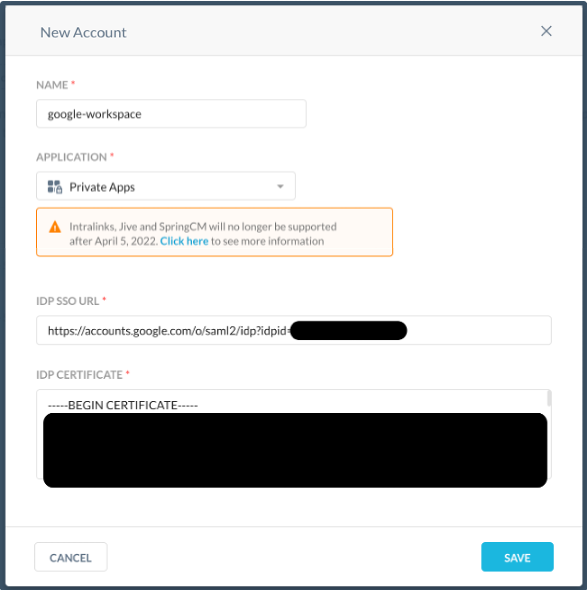 Enter your Google Workplace SSO URL and certificate.
Click Save.
Click Network Settings beside the account name.
Copy the ACS URL and Audience URL.
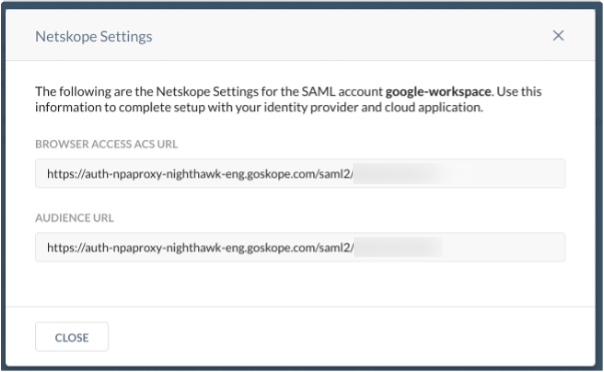
Create a SAML Application
Go back to Google Workspace
, click Add App, and then click Add Custom SAML App.Enter an App Name and click Continue.
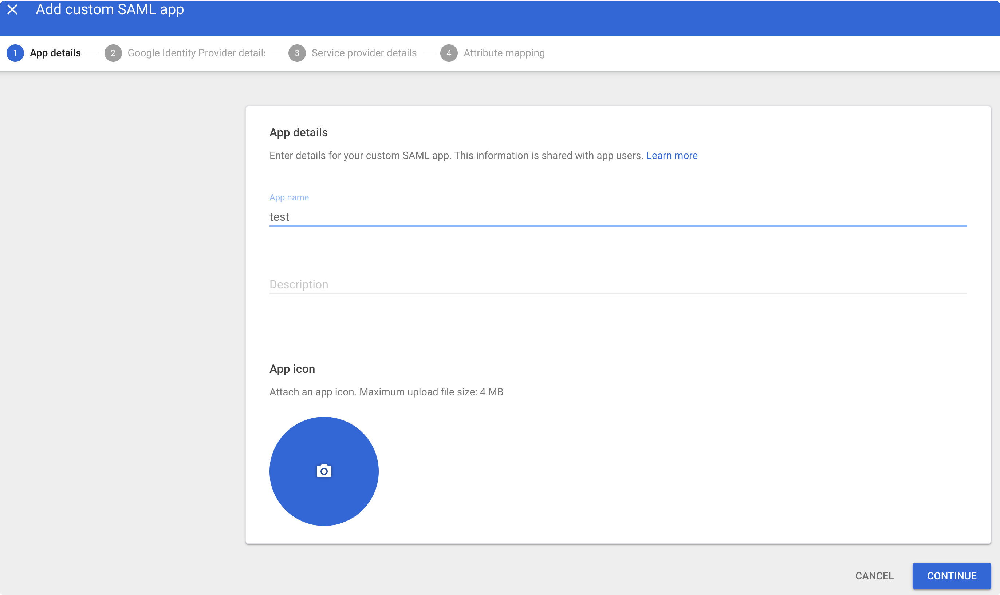 On the next page just click Continue.
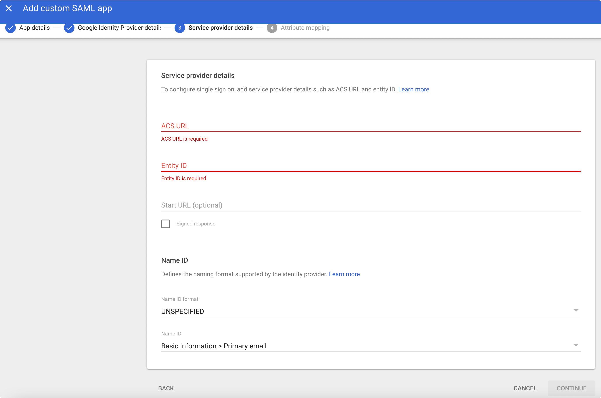 For ACS URL, enter the ACS URL from the Netskope UI. For Entity ID, enter the Audience URL from the Netskope UI.
Click Finish.
Test Browser Access
In a browser, go to the Public Host address for the Private App configured for Browser Access. To get the Public Host address, go to Settings > Security Cloud Platform > App Definition > Private Apps and click on your private app.
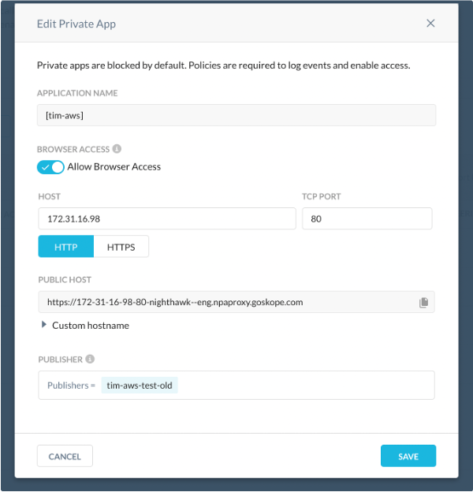 Use the Google Workspace account to authenticate and log in.
This document explains how to configure Single-Sign-On (SSO) using SAML for Apache Guacamole for both Azure AD and Okta.
What is Guacamole?
Apache Guacamole is a clientless remote desktop gateway that supports standard protocols, like VNC, RDP, and SSH. We call it clientless because no plugins or client software are required. Thanks to HTML, once Guacamole is installed on a server, all you need to access your desktops is a web browser. For more information, refer to: Apache.org
Guacamole allows you to access servers, workstations, and infrastructure (essentially anything that connects using SSH or RDP) via a web browser.
It also provides a layer of isolation as the user is not directly connected to the resource themselves. Instead, Guacamole connects to the resource and the user interacts with a HTML canvas of what is on-screen, allowing you to control actions, such as the ability to copy and paste between the remote host and user machine.
Guacamole is particularly useful in instances where you want to provide access to internal company resources to 3rd parties. like MSPs or contractors, but don’t want them to be able to connect to the resource directly.
Why Bother with an SSO Integration?
SSO authentication for Guacamole is valuable as a means to get visibility of internal resources (like what servers/workstations a user can see and connect to within the Guacamole UI), and this can be managed entirely within your existing Identity Provider (IdP), rather than within Guacamole itself.
By simply assigning users to different Groups within the IdP, you can control what internal resources they have access to, without having to touch Guacamole itself.
This has two benefits:
A reduction of operational overhead in having to manage system access in more than one location.
Ensuring that your IdP is the single-source of truth for validation of identity (critical if you moving your business towards a Zero Trust Architecture)
If you are a homelabber and want to start dabbling with SSO, Azure Active Directory’s free tier will work fine for this integration.
Prerequisites
You need the following to configure Guacamole and configure the SAML integration:
A Linux system capable of supporting the docker.io release of Docker, and Docker Compose.
Ubuntu Server 20.04 LTS is recommended.
This guide describes using Ubuntu Server 20.04 LTS running in AWS (t2.micro instance == 1 vCPU, 1 GB memory)
An Identity Provider (IdP) that supports SAML 2.0, such as Azure AD or
Okta.
The Azure AD free tier is sufficient.
This guide describes using Azure AD and Okta, but the steps are applicable to any SAML 2.0 IdP.
The FQDN/domain you wish to use to access Guacamole, like
guac.company.local.The domain must resolve internally to the IP address of the system that Guacamole is running on, like
guac.company.local > 10.0.10.7.If you will be accessing Guacamole through a Clientless ZTNA solution like Netskope Private Access, then the domain you choose MUST be an external one and the same one that users will use to access it remotely, like
guac.company.com. You CANNOT use a local/internal domain like .local.
If you don't already have Guacamole configured, go to Installing Guacamole with Docker, which explains how to deploy Guacamole as a series of Docker containers, meaning, as long as your system can run Docker, it will be able to run Guacamole.
A configured Netskope Private Access Publisher.
Workflow
Configure SAML with Azure AD or Okta.
Create a SAML account in Netskope for your IdP.
Enable browser access for private apps.
Create a Real-time Protection Policy
Configure Azure AD SAML
Create a new Enterprise Application
Log in to the Azure AD portal, and go to Enterprise Applications. You may need to search for this at the top of the portal.
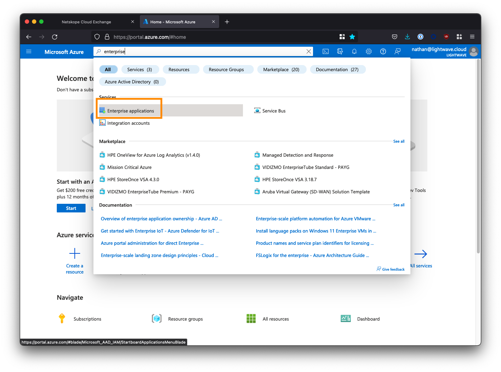 Click New application.

Click Create your own application and name the application Apache Guacamole SSO.
Select the 3rd option to create a non-gallery app: Integrate any other application you don’t find in the gallery.
Click Create when you are done.
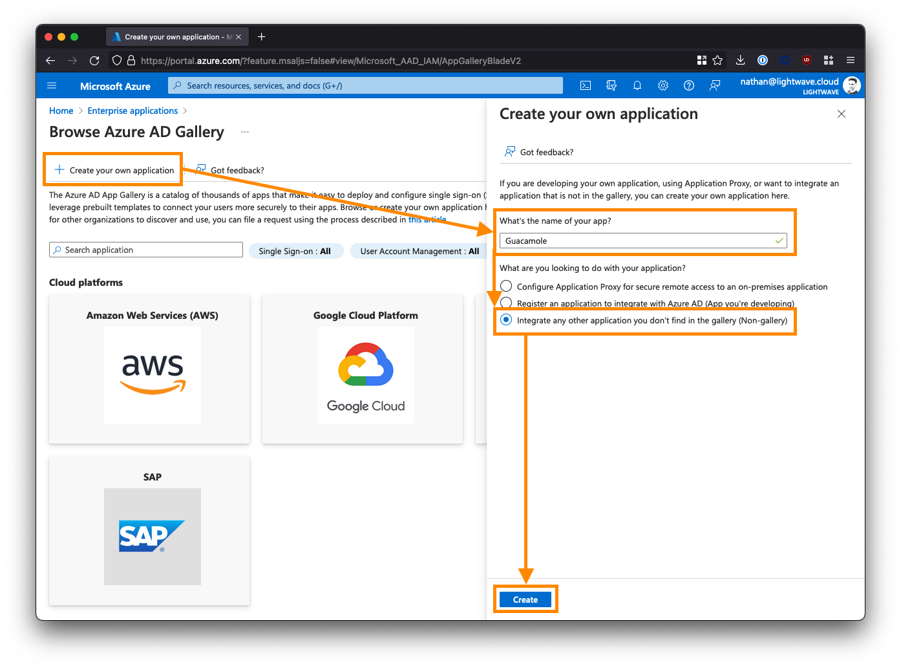
Configure the Guacamole Enterprise App in Azure AD
From the left-side menu, click Properties, and set the Visible to Users? option to No.
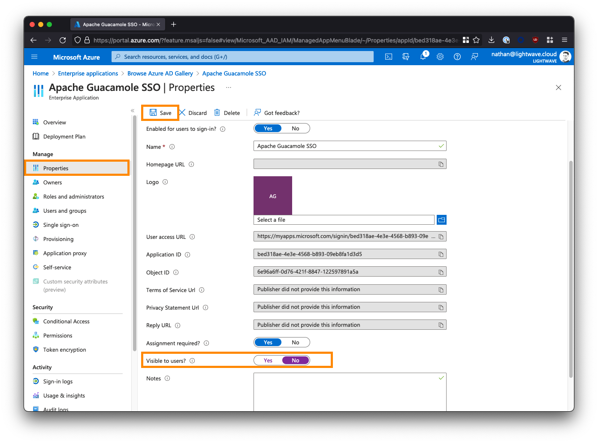 Click Single sign-on from the left-side menu, and select SAML when prompted.
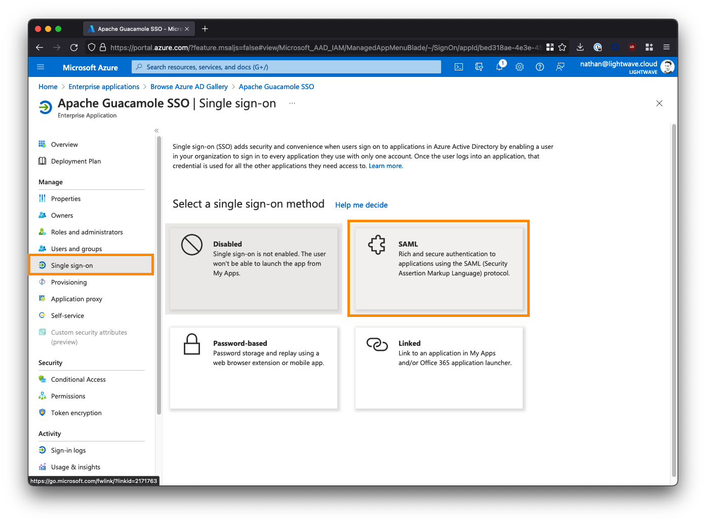
Provide the SAML Configuration
Under Basic SAML Configuration, click Edit and enter the following parameters. Substitute
<fqdn-of-your-guacamole-instance>with the domain you wish to use to access the Guacamole UI. For example:guac.company.com.Identifier (Entity ID):
https://<fqdn-of-your-guacamole-instance>For example:https://guac.company.comReply URL (Assertion Consumer Service URL):
https://<fqdn-of- your-guacamole-instance>/guacamole/api/ext/saml/callbackFor example:https://guac.company.com/guacamole/api/ext/saml/callbackLeave all the other fields blank (Sign on URL, Relay State, etc).
When finished, save your configuration.

Copy the Azure AD Metadata URL
Scroll down and under Section 3 - SAML Signing Certificate, copy the App Federation Metadata URL. You will need this later. The URL should look like this:
https://login.microsoftonline.com/a1b2c3d4-e5f6-0a1b-2c3d- 4e5f6a1b2c3d/federationmetadata/2007- 06/federationmetadata.xml?appid=a1b2c3d4-e5f6-0a1b-2c3d- 4e5f6a1b2c3d
| 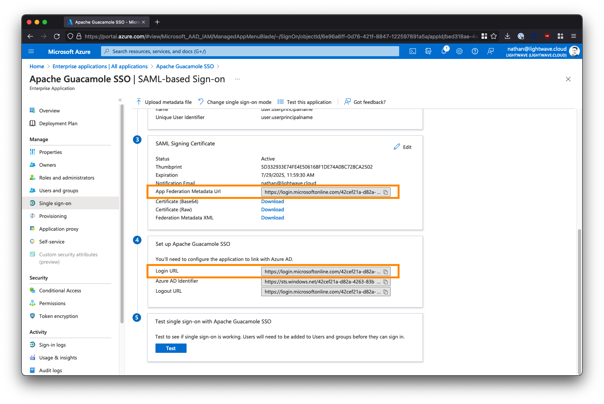 |
Add Users and Groups to the Enterprise Application
In Azure AD, you need to assign users and/or groups to the Apache Guacamole SSO app to provide them with access. Any user or group added here will be permitted through SSO to access your Guacamole instance, so be cautious.
From the left-side menu within the Apache Guacamole SSO Enterprise Application, select Users and groups, then click Add user/group.
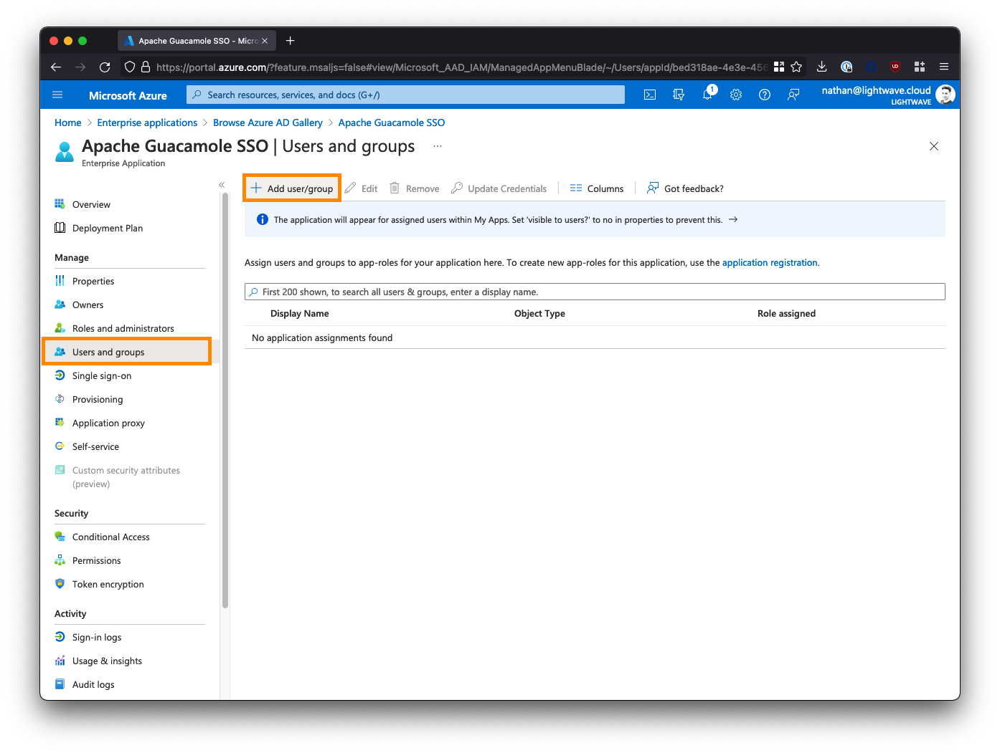 Select the users and/or groups that are permitted to access your Guacamole instance. Note that nested groups are not supported.
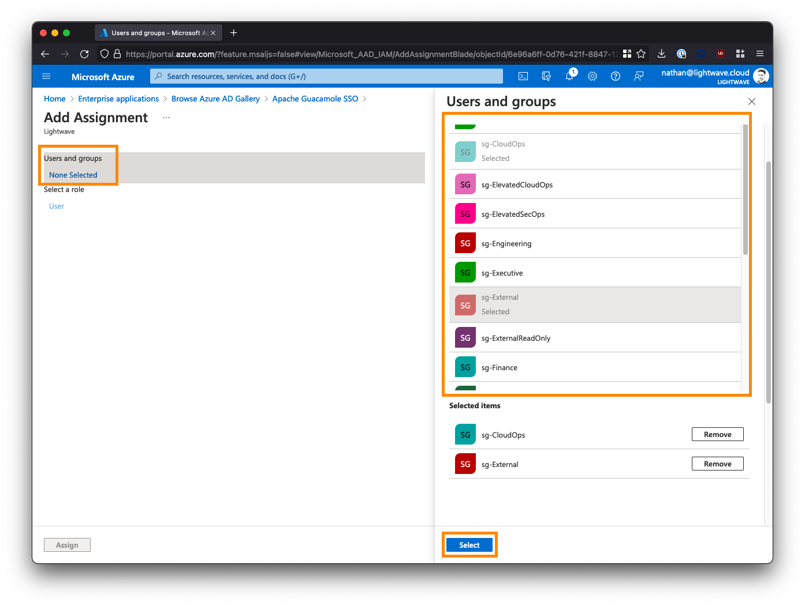 If you are deploying Guacamole to provide clientless access for 3rd parties/contractors to access internal resources via a ZTNA solution (like Netskope NPA), then you may want to create a group/security group specifically for these individuals and assign it to the Guacamole app. For example:
sg-External. Note down the groups you select here as these will be the same groups that you add to a ZTNA policy later on.Note
If you are using Azure AD’s free tier, you might not be able to correctly use Groups. Keep to assigning individual users only.
After assigning users/groups and applicable roles, your user/group list should look similar to this:
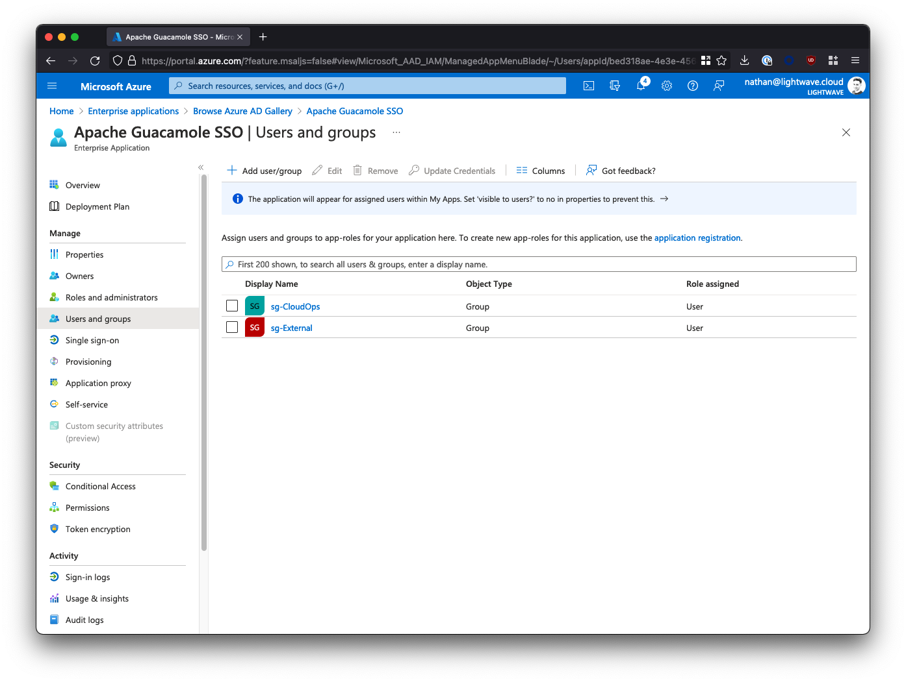 You’ve now finished the configuration in Azure AD and can proceed to installing Guacamole.
Configure Okta SAML
Create a new App Integration
Log in to your Okta administrator console, and from the left-side menu go to Applications > Applications. Click Create App Integration.
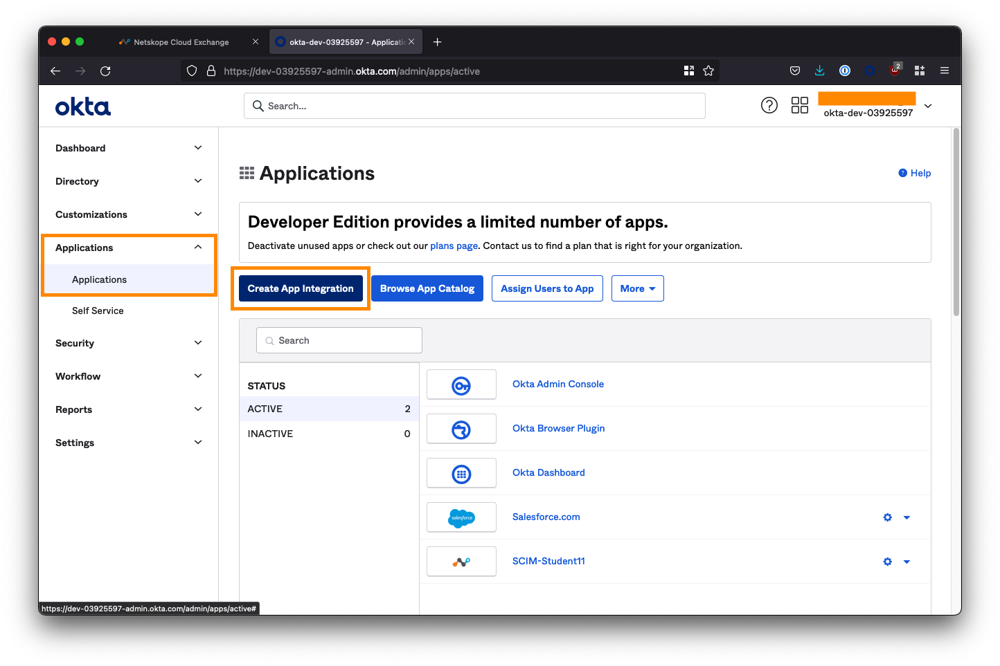 Select SAML 2.0 as the sign-in method and click Next.

Name the application Apache Gucamole SSO and check both of the app visibility boxes to hide the app icon from users. Click Next.
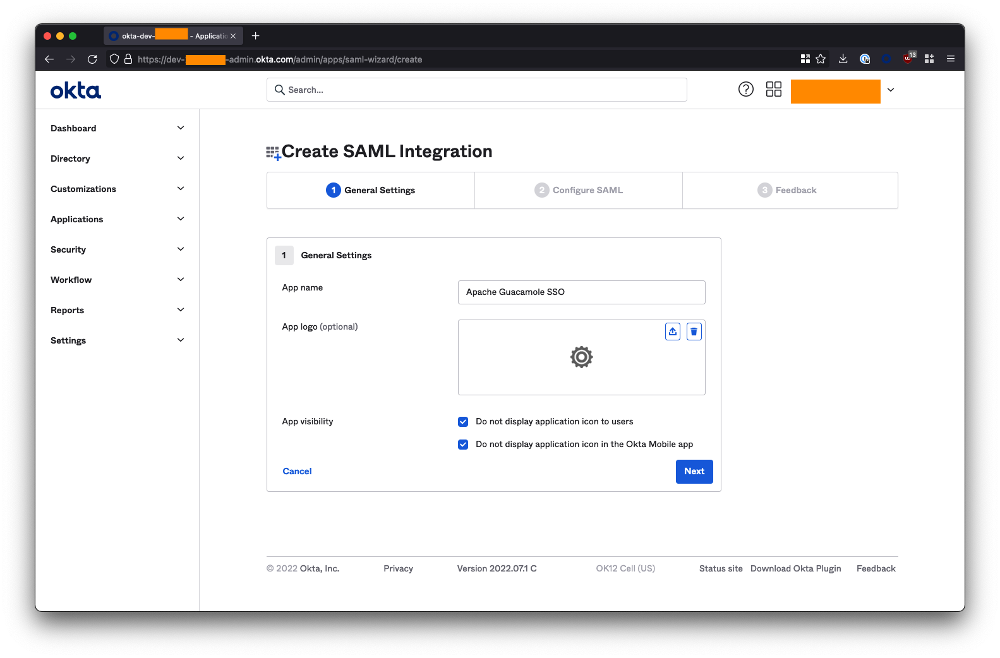
Configure the Okta SAML Integration
Under SAML Settings, enter the parameters for the following fields. Substitute
<fqdn-of- your-guacamole-instance>with the domain you wish to use to access the Guacamole UI. For example:guac.company.com.Single sign on URL:
https://<fqdn-of-your-guacamole- instance>/guacamole/api/ext/saml/callback. For example:https://guac.company.com/guacamole/api/ext/saml/callback **Audience URI (SP Entity ID):
https://<fqdn-of-your-guacamole- instance>For example:https://guac.company.com **Name ID format: Set this to EmailAddress.
Leave all the other fields blank or as their default values (Default RelayState, App username, etc).
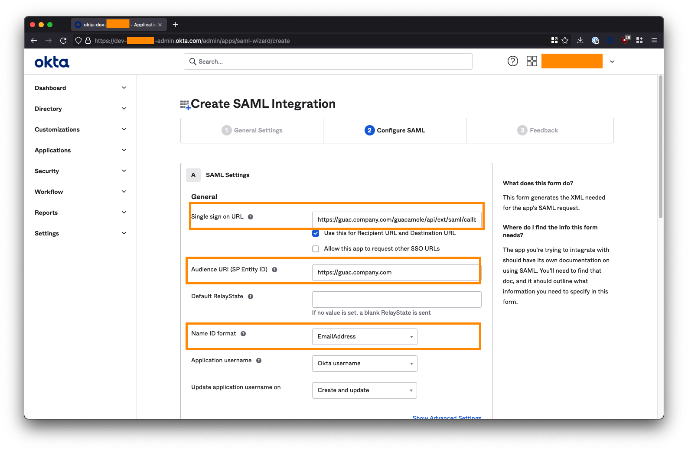 Scroll down and click Next.
On the next page, check the box I’m an Okta customer adding an internal app and click Finish.
Get the Okta IdP Metadata URL
Go to the Sign On tab and click the View Setup Instructions button on the right-side of the screen. You may need to scroll down.
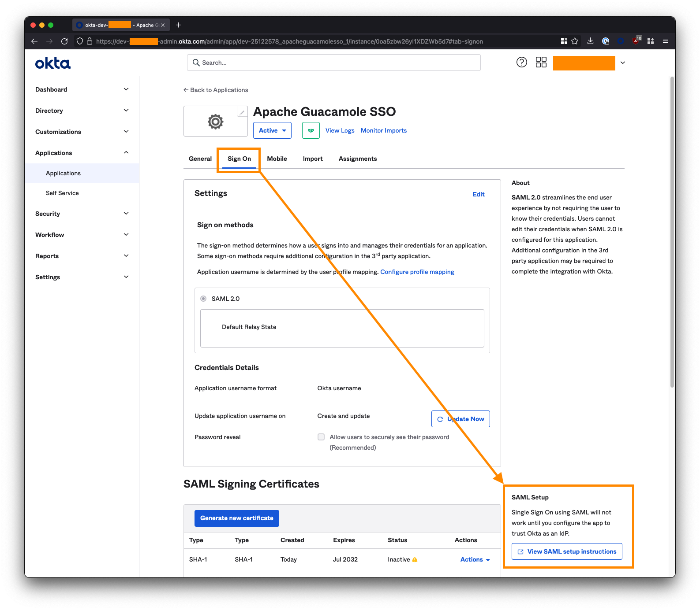 Extract your tenant ID and App ID from the Identity Provider Single Sign-On URL, which looks like this:
https://<tenant-id>.okta.com/app/<tenant-id>dev-01234567_apacheguacamolesso_1/<app-id>/sso/saml
For example, if your URL is:
https://dev-01234567.okta.com/app/dev-01234567_apacheguacamolesso_1/ezk5zbw26xt3cSSEC5d7/sso/saml
The tenant ID is
dev-01234567.The app ID is
ezk5zbw26xt3cSSEC5d7.Copy these into the below URL to form the Okta IdP Metadata URL:
https://<tenant-id>.okta.com/app/<app-id>/sso/saml/metadata
For example:
https://dev- 01234567.okta.com/app/ezk5zbw26xt3cSSEC5d7/sso/saml/metadata
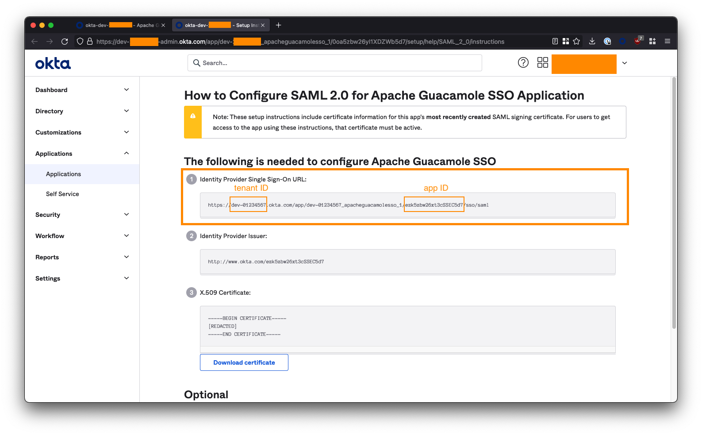 Copy this URL. You will need it to configure Guacamole later.
You will know your URL is correct if you visit it in your browser and it loads a bunch of XML:
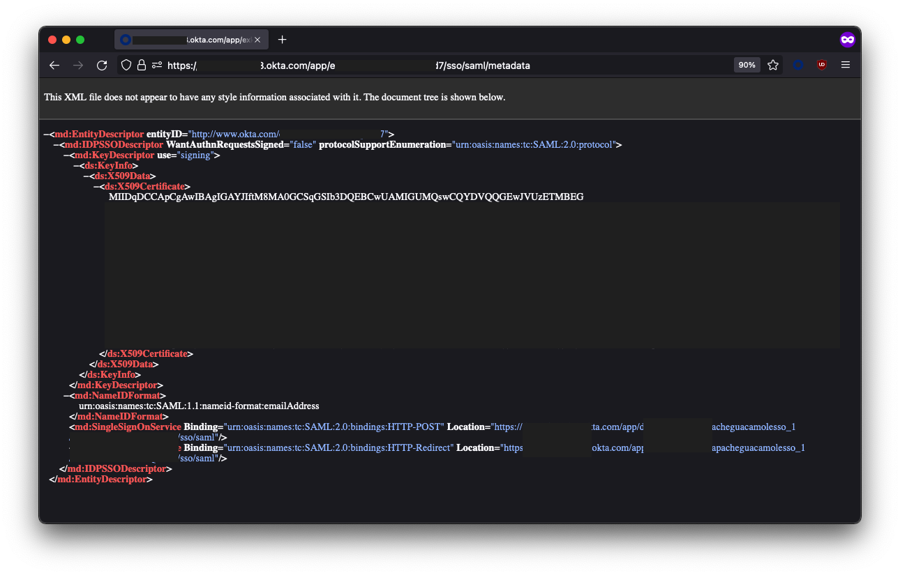
Add Users and Groups to the Application
The last step we need to perform in Okta is to assign users and/or groups to the Apache Guacamole SSO app to provide them with access. Any user or group added here will be permitted to SSO through to and access your Guacamole instance, so be careful!
Go to the Assignments tab within the Apache Guacamole SSO app. Use the Assign button to select either the individual users or groups that are permitted to access your Guacamole instance.
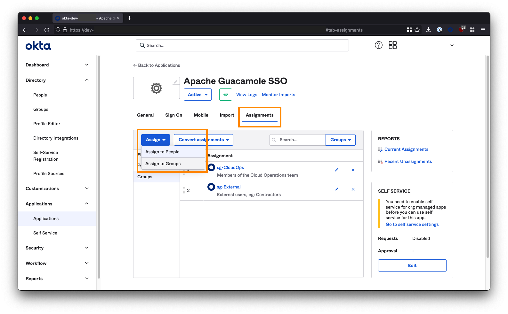 If you are deploying Guacamole to provide clientless access for 3rd parties/contractors to access internal resources via a ZTNA solution (like Netskope NPA), then you may want to create a group/security group specifically for these individuals and assign it to the Guacamole app. For example:
sg-External. Note down the groups you select here as these will be the same groups that you add to ZTNA policy later on..You’ve finished this configuration in Okta and can proceed to installing Guacamole.
Browser Access is an additional method through which users can access enterprise internal web applications over HTTP/HTTPS. Users can also access non HTTP/HTTPS internal applications using the Netskope Client.
You must have an active Identity Provider (IdP) account and have privileges to modify settings in your IdP account that will direct traffic to Netskope.
Browser Access requires that the hostname in the originating HTTP request matches the hostname expected by the Application server. Browser Access only supports HTTP/1.1, HTTP/2, and TLS 1.2. TLS 1.3 and HTTP/3 are not supported.
Create a SAML Reverse Proxy account in the Netskope UI, and then update your IdP account with the Netskope ACS URL and Audience URL.
Create a Real-time Protection policy to grant users browser access to Private Apps.
Create a SAML Account for Browser Access
You will need your IdP SSO URL and certificate to complete these steps.
Log in to the Netskope UI.
Go to Settings > Security Cloud Platform and click SAML (under Reverse Proxy).
Click Add Account.
In the New Account window, enter a name for the account.
Select Private Apps from the Application dropdown list.
Select and enter these parameters:
IdP SSO URL: Enter your IdP SSO URL.
IdP Certificate: Enter your IdP certificate.
Click Save and View Netskope Settings to see the URLs for this account. Copy the Browser Access ACS URL and Audience URL to use in your IdP account. Update your IdP account with these URLs before proceeding.
Enable Browser Access for a Private App
These instructions are for new and existing Private Apps.
Go to Settings > Security Cloud Platform > App Definition and click Private Apps.
Click New Private App to create a new private app, or select an existing app (and jump to step 4).
Enter a meaningful app name in the Application Name field.
Enable Allow Browser Access.
Enter the Host domain in the Host field (like
jira.site.io). The Host field supports the following syntax: Host (jira.site.io). Up to 32 hosts can be added. Browser Access does not support wildcards in host names. Next add a TCP port number.After adding the hostname and port, the Public Host URL is displayed. This is the URL by which properly authenticated users can access the private app. You can copy the public host name by clicking the copy icon
.Select HTTP or HTTPS. For HTTPS, the private app must either use a certificate that is signed by a trusted certificate authority, or you must select the Trusted self-signed certificate option.
A Private App can be accessed via a browser in two ways:
Using the generated hostname from the Public Host field.
Creating a custom hostname and uploading a certificate and key pair for the private host. Click the Custom Hostname toggle, and then click Upload the Certificate to open a page to enter your certificate and key.
Note
You can use the public host name for your custom host name in your DNS system. Create a DNS record, select the CNAME type, and then add your public host name. You will need to upload the certificate and key for the custom host name. Click the Custom Hostname toggle, and then click Upload the Certificate to open a page to enter your certificate and key.
Click in the Publisher text field and select one or more Publishers from the dropdown list.
Tip
For high-availability, add multiple publishers for each private app. Up to 16 Publishers can be used per app.
Click Save.
Connecting the private app to the publisher may take several minutes. Make sure that you see the green icon for this private app before proceeding. If the badge is red, use the Troubleshooter feature or check your firewall rules before proceeding.
Note
When a user has access to a private app on different tenants using Netskope-encoded private app URLs from the same browser, then after accessing the private app on one tenant, a user will need to clear the cookies from the browser before being able to access the private app on a different tenant.
Create a Real-time Protection Policy for Browser Access to Private Apps
You need to create a Real-time Protection policy in order to allow Browser Access to Private Apps.
Go to Policies > Real-time Protection.
Click New policy and select Private App Access.
For Source, select the Users, OU, or Groups for which you want to grant access to the private app(s).
For Access Method, select Browser Access. At least one Access Method must be defined, either Browser Access or Client.
If Browser Access is used, Client users will not be able to access Browser Access Private Apps. If Client is used, Client users and Browser Access users will have access to Private Apps.
If Access Method is not showing, click Add Criteria to search for and select Access Method, and then select Browser Access.
For Destination, leave Private App and select your private app from the dropdown list.
For Action, select Allow to grant access. To deny access, select Block, select a policy notification template from the dropdown list, or create one.
Give the policy a name (like
Browser Access for JIRA), and then click Email Notification to choose the notification template for the policy. When finished, click Save.Click Apply Changes.
Clear Browser Access
Browser Access provides the ability to terminate a user's active session. Go to Skope IT > Users, click the menu icon for a user, and then click Clear Private App Auth to clear the user's browser access authentication information. As a result, the user will need to re-authenticate to access the private app.
To steer traffic for private apps, you can add users or create a steering configuration that specifies an Organizational Unit (OU) or User Group.
OUs or User Groups are specified in the Real-time Protection policy that grants access to private apps.
If you do not already have a steering configuration that specifies the Organization Unit (OU) or User Group you want to steer to a private apps, follow these steps.
If you already have such a steering configuration, you can simply enable private apps for that steering configuration. For more details, refer to Change Steering Configurations to Include Private Apps.
Go to Settings > Security Cloud Platform > Steering Configuration and click Create a New Configuration.

In the New Configuration dialog box, enter and select the following settings:
Configuration Name: Enter a meaningful name for this steering configuration.
Applies To: Choose either an OU or User Group. The dropdown/search field allows you to select and search for an OU or User Group.
Traffic: Select Cloud Apps Only or All Web Traffic.
Status: Change to Enabled.
Private Apps: Change to Steer All Private Apps.
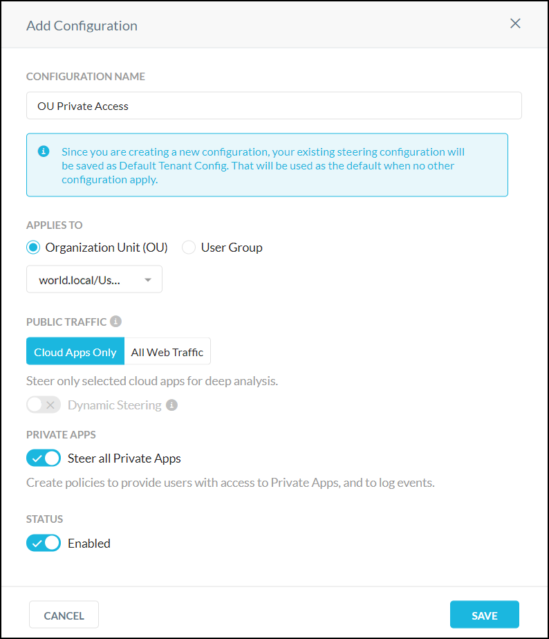 Click Save.
To update a steering configuration for private apps, follow these steps:
Go to Settings > Security Cloud Platform > Steering Configuration. Complete the following steps for each steering configuration that you want to steer to private apps. There are two methods:
If you have just one Default steering configuration, you can use the Edit button in the top right corner.

If you have multiple steering configurations, click the
icon on the right side of each configuration and select Edit Configuration.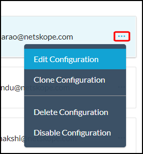
For Private Apps, change to Steer All Private Apps.

Click Done.